전자기사 (2020-06-06 기출문제)
1과목: 전기자기학
1. 자기유도계수 L의 계산 방법이 아닌 것은? (단, N:권수, ø: 자속(Wb), I:전류(A), A:벡터 퍼텐셜(Wb/m), i:전류밀도(A/m2), B:자속밀도(Wb/m2), H:자계의 세기(AT/m)이다.)
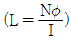
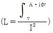
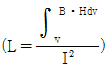
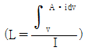
(정답률: 36%)

2. 20℃에서 저항의 온도계수가 0.002인 니크롬선의 저항이 100Ω이다. 온도가 60℃로 상승하면 저항은 몇 Ω이 되겠는가?
- 108
- 112
- 115
- 120
(정답률: 40%)
3. 면적이 S(m2)이고 극간의 거리가 d(m)인 평행판 콘덴서에 비유전율이 εr인 유전체를 채울 때 정전용량(F)은? (단, ε0)은 진공의 유전율이다.)
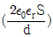
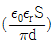
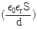
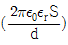
(정답률: 54%)
4. 유전율이 ε1, ε2(F/m)인 유전체 경계면에 단위 면적당 작용하는 힘의 크기는 몇 N/m2인가? (단, 전계가 경계면에 수직인 경우이며, 두 유전체에서의 전속밀도는 D1=D2=D(C/m2)이다.)
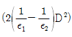
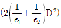
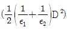
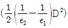
(정답률: 52%)
5. 그림과 같이 내부 도체구 A에 +Q(C), 외부 도체구 B에 -Q(C)를 부여한 동심 도체구 사이의 정전용량 C(F)는?
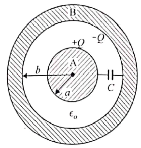
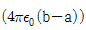
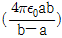
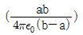
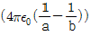
(정답률: 53%)
6. 반지름 r(m)인 무한장 원통형 도체에 전류가 균일하게 흐를 때 도체 내부에서 자계의 세기(AT/m)는?
- 원통 중심축으로부터 거리에 비례한다.
- 원통 중심축으로부터 거리에 반비례한다.
- 원통 중심축으로부터 거리의 제곱에 비례한다.
- 원통 중심축으로부터 거리의 제곱에 반비례한다.
(정답률: 21%)
7. 자기 인턱턴스와 상호 인턱던스와의 관계에서 결합계수 k의 범위는?
- 0≤k≤1/2
- 0≤k≤1
- 1≤k≤2
- 01k≤10
(정답률: 60%)
8. 전계 및 자계의 세기가 각각 E(V/m), H(AT/m)일 때, 포인팅 벡터 P(W/m2)의 표현으로 옳은 것은?
- P=1/2E×H
- P=E rot H
- P=E×H
- P=H rot E
(정답률: 62%)
9. 자기회로에서 자기저항의 크기에 대한 설명으로 옳은 것은?
- 자기회로의 길이에 비례
- 자기회로의 단면적에 비례
- 자성체의 비투자율에 비례
- 자성체의 비투자율의 제곱에 비례
(정답률: 46%)
10. 전위함수 V=x2+y2(V)일 때 점(3,4)(m)에서의 등전위선의 반지름은 몇 m이며, 전기력선 방정식은 어떻게 되는가?
- 등전위선의 반지름:3, 전기력선 방정식:y=(3/4)x
- 등전위선의 반지름:4, 전기력선 방정식:y=(4/3)x
- 등전위선의 반지름:5, 전기력선 방정식:x=(4/3)y
- 등전위선의 반지름:5, 전기력선 방정식:x=(3/4)y
(정답률: 36%)
11. 자속밀도 B(Wb/m2)의 평등 자계 내에서 길이 l(m)인 도체 ab가 속도 v(m/s)로 그림과 같이 도선을 따라서 자계와 수직으로 이동할 때, 도체 ab에 의해 유기된 기전력의 크기 e(V)와 폐회로 abcd 내 저항 R에 흐르는 전류의 방향은? (단, 폐회로 abcd 내 도선 및 도체의 저항은 무시한다.)
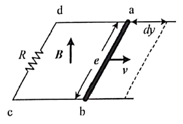
- e=Blv, 전류방향 : c→d
- e=Blv, 전류방향 : d→c
- e=Blv2, 전류방향 : c→d
- e=Blv2, 전류방향 : d→c
(정답률: 35%)
12. 비유전율 εr이 4인 유전체의 분극률은 진공의 유전율 ε0의 몇 배인가?
- 1
- 3
- 9
- 12
(정답률: 41%)
13. 정전계 해석에 관한 설명으로 틀린 것은?
- 포아송 방정식은 가우스 정리의 미분형으로 구할 수 있다.
- 도체 표면에서의 전계의 세기는 표면에 대해 법선 방향을 갖는다.
- 라플라스 방정식은 전극이나 도체의 형태에 관계없이 체적전하밀도가 0인 모든 점에서 ∇2V=0을 만족한다.
- 라플라스 방정식은 비선형 방정식이다.
(정답률: 44%)
14. 진공 중 3m 간격으로 두 개의 평행한 무한 평판 도체에 각각 +4C/m2, -4C/m2의 전하를 주었을 때, 두 도체 간의 전위차는 약 몇 V인가?
- 1.5×1011
- 1.5×1012
- 1.36×1011
- 1.36×1012
(정답률: 26%)
15. 10mm의 지름을 가진 동선에 50A의 전류가 흐르고 있을 때 단위시간 동안 동선의 단면을 통과하는 전자의 수는 약 몇 개인가?
- 7.85×1016
- 20.45×1015
- 31.21×1019
- 50×1019
(정답률: 48%)
16. 공기 중에 있는 무한히 긴 직선 도선에 10A의 전류가 흐르고 있을 때 도선으로부터 2m 떨어진 점에서의 자속밀도는 몇 Wb/m2인가?
- 10-5
- 0.5×-6
- 10-6
- 2×-6
(정답률: 40%)
17. 평등자계 내에 전자가 수직으로 입사하였을 때 전자의 운동에 대한 설명으로 옳은 것은?
- 원심력은 전자속도에 반비례한다.
- 구심력은 자계의 세기에 반비례한다.
- 원운동을 하고, 반지름은 자계의 세기에 비례한다.
- 원운동을 하고, 반지름은 전자의 회전속도에 비례한다.
(정답률: 37%)
18. 면적이 매우 넓은 두 개의 도체 판을 d(m) 간격으로 수평하게 평행 배치하고, 이 평행 도체 판 사이에 놓인 전자가 정지하고 있기 위해서 그 도체 판 사이에 가하여야 할 전위차(V)는? (단, g는 중력 가속도이고, m은 전자의 질량이고, e는 전자의 전하량이다.)
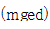
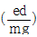
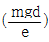
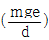
(정답률: 26%)
19. 반자성체의 비투자율(μr) 값의 범위는?
- μr=1
- μr＜1
- μr＞1
- μr=0
(정답률: 50%)
20. 그림에서 N=1000회, l=100cm, S=10cm2인 환상 철심의 자기 회로에 전류 I=10A를 흘렸을 때 축적되는 자계 에너지는 몇 J인가? (단, 비투자율 μr=100이다.)
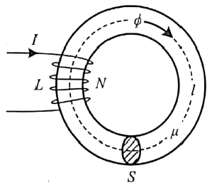
- 2π×10-3
- 2π×10-2
- 2π×10-1
- 2π
(정답률: 22%)
2과목: 회로이론
21. 다음 중 쌍대관계(dual)가 아닌 것은?
- 인덕턴스와 서셉턴스
- 전압과 전류
- 단락과 개방
- 전압원과 전류원
(정답률: 50%)
22. 1H인 인턱터에 그림과 같은 전류가 흐를 때 전압 파형으로 옳은 것은?
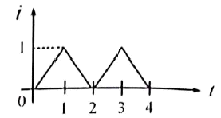
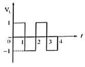
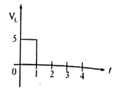
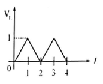
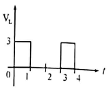
(정답률: 48%)
23. 다음 회로를 루프해석법으로 풀기 위해
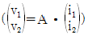
형태의 방정식으로 정리하였을 때 행렬 A는? (단, V1=10V, V2=4V 이다.)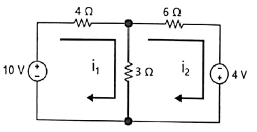
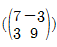
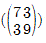
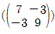
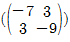
(정답률: 41%)
24. 함수 x(t)=2e-2(t-3)·u(t-3)의 라플라스 변환식 X(s)는?
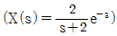
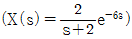
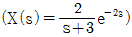
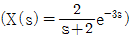
(정답률: 38%)
25. 차단 주파수에 대한 설명으로 틀린 것은?
- 출력 전압이 최대값의 1/√2 이 되는 주파수이다.
- 전력이 최대값의 1/2이 되는 주파수이다.
- 전압과 전류의 위상차가 60°가 되는 주파수이다.
- 출력 전류가 최대값이 1/√2이 되는 주파수이다.
(정답률: 37%)
26. 시정수가 τ인 RL 직렬회로에 직류 전압을 가할 때 시간 t=3τ에서 흐르는 전류는 최종치의 몇 %인가?
- 63.2
- 86.5
- 95.0
- 98.2
(정답률: 34%)
27. 다음 그림에서 단자 a-b에 나타나는 전압(Vab)는 약 몇 V인가?
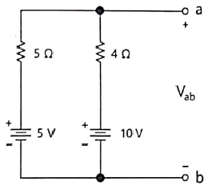
- 4.5
- 6.7
- 7.0
- 7.8
(정답률: 40%)
28. 단위 계단함수 u(t-a)의 파형으로 옳은 것은?
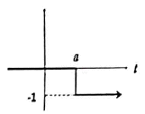
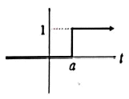
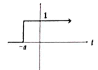
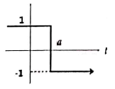
(정답률: 45%)
29. 다음 회로에서 단자 a, b 왼쪽 회로의 테브난 등가 전압원(Vth=Vab)은 몇 V인가?
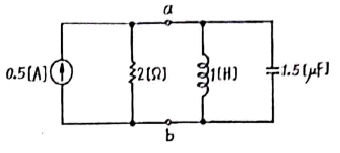
- 0.5
- 1
- 1.5
- 2
(정답률: 43%)
30. 다음의 회로망 방정식에 대하여 s평면에 존재하는 극점은?
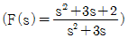
- 3, 0
- -3, 0
- 1, -3
- -1, -3
(정답률: 44%)
31. RL 직렬회로에서 L=40mH, R=10Ω일 때, 회로의 시정수는 몇 s인가?
- 4
- 0.4
- 0.04
- 0.004
(정답률: 42%)
32. π형 회로망의 어드미턴스 파라미터 관계가 틀린 것은?
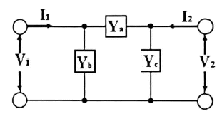
- Y21=Ya
- Y11=Ya+Yb
- Y12=-Ya
- Y22=Ya+Yc
(정답률: 21%)
33.
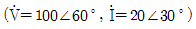
일 때 유효 전력은?- 1000√3
- 2000√3
- 2000/√3
- 1000/√3
(정답률: 32%)
34. 저항 1Ω과 리액턴스 2Ω을 병렬로 연결한 회로의 역률은 약 얼마인가?
- 0.2
- 0.45
- 0.9
- 1.5
(정답률: 33%)
35. 공진회로에서 공진의 상태를 설명한 것으로 옳은 것은?
- 전압과 전류가 45° 될 때이다.
- 역률이 0.5가 되는 상태이다.
- 공진이 되었을 때 최대전력의 0.5배가 전달된다.
- 직렬공진회로에서는 전류가 최대로 된다.
(정답률: 44%)
36. 다음 회로에서 합성 인덕턴스는 몇 H인가? (단, L1=6H, L2=3H, M=3H 이다.)
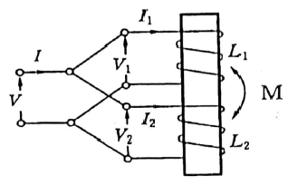
- 1
- 2
- 3
- 6
(정답률: 39%)
37. 임피던스
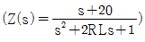
인 2단자 회로에 직류 전류 20A를 인가할 때 단자 전압은 몇 V인가? (단, R=10Ω, L=20mH)- 20
- 40
- 200
- 400
(정답률: 35%)
38. 회로에서 4단자 정수 A, B, C, D 는?
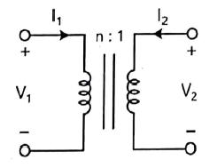
- A=n, B=0, C=0, D=1/n
- A=0, B=1/n, C=0, D=n
- A=1/n, B=0, C=n, D=0
- A=n, B=n, C=1/n, D=0
(정답률: 38%)
39. 라플라스 변환에 관한 설명 중 틀린 것은?
- f(t-a)을 라플라스 변환하면 e-asF(s)가 된다.
- f(t)e-at을 라플라스 변환하면 F(s-a)가 된다.
- t2을 라플라스 변환하면 2/s3가 된다.
- u(t)을 라플라스 변환하면 1/s 이 된다.
(정답률: 32%)
40. 분류기를 사용하여 전류를 측정하는 경우 전류계의 내부저항이 0.1Ω, 분류기의 저항이 0.01Ω이면 그 배율은?
- 4
- 10
- 11
- 14
(정답률: 30%)
3과목: 전자회로
41. 다음의 진리표를 갖는 조합회로의 구성은? (단, A, B, C는 입력이고, D는 출력이다.)
(정답률: 39%)
42. 어떤 연산 증폭기의 SR(slew rate)이 0.5V/μs이라면, 정현파 출력의 peak 전압이 5V인 경우 대신호 동작 시 일그러짐이 발생되지 않는 최대 주파수는 약 몇 kHz인가?
- 2
- 7.96
- 15.92
- 31.84
(정답률: 28%)
43. 어떤 RC 미분회로에 진폭이 5V이고 펄스폭이 100μs, 주기가 200μs인 펄스파 전압을 가했을 때, 펄스폭에서 시정수의 5배 시간에 순간적으로 R 양단에 측정되는 전압은 약 몇 V인가? (단, 시정수는 10μs보다 작다.)
- 0.0632
- 0.034
- 0.632
- 0.34
(정답률: 22%)
44. 연산증폭기회로에서 부귀환의 장점으로 틀린 것은?
- 개선된 비선형성
- 넓은 대역폭
- 안정된 제어 이득
- 입·출력 임피던스 제어
(정답률: 35%)
45. 다음 정류회로에서 리플 전압은 콘덴서와 부하저항과 어떤 관계를 가지는가?
- 부하저항과 무관하고, 콘덴서 용량에 비례한다.
- 부하저항과 무관하고, 콘덴서 용량에 반비례한다.
- 부하저항과 콘덴서 용량에 반비례한다.
- 부하저항과 콘덴서 용량에 비례한다.
(정답률: 27%)
46. 다음 중 트랜지스터 증폭회로에서 높은 주파수에서 이득이 감소하는 이유로 적합한 것은?
- 부성저항이 생기기 때문에
- 결합 커패시턴스의 영향 때문에
- 하이브리드 정수의 변화 때문에
- 도선 등의 표유 용량 때문에
(정답률: 21%)
47. 수정 발전기의 주파수 안정도가 양호한 이유가 아닌 것은?
- 수정면의 Q가 매우 높다.
- 수정 진동자는 기계적으로 안정하다.
- 유도성 주파수 범위가 매우 좁다.
- 부하 변동의 영향을 전혀 받지 않는다.
(정답률: 43%)
48. 다음 연산증폭기회로에서 페루프이득(lAVl)이 110 이 되기 위해 Rf는?
- 22Ω
- 242Ω
- 22kΩ
- 242kΩ
(정답률: 37%)
49. 다음 회로의 명칭으로 가장 적합한 것은?
- 슈미트(Schmitt) 트리거 회로
- 톱니파 발생 회로
- 단안정 멀티바이브레이터 회로
- 비안정 멀티바이브레이터 회로
(정답률: 39%)
50. 다음 555타이머 회로의 출력 발진 주파수는 약 몇 kHz인가?
- 3.8
- 5.64
- 8.24
- 10.68
(정답률: 27%)
51. 이미터 저항을 가진 이미터 접지 증폭기 회로에서 이미터 바이패스 콘덴서가 제거되면 어떤 현상이 생기는가?
- 발진이 일어난다.
- 이득이 감소한다.
- 충실도가 감소된다.
- 잡음이 증가한다.
(정답률: 30%)
52. 공간전하용량 변화에 따라 가변용량콘덴서로 사용되는 다이오드는?
- 꽝 다이오드
- 제너 다이오드
- 건 다이오드
- 바랙터 다이오드
(정답률: 40%)
53. 다이오드 검파회로에서 AGC 전압의 크기는 다음 어는 것에 따라 커지는가?
- 반송파 변조도가 증가함에 따라
- 반송파 주파수가 증가함에 따라
- 반송파 전압의 진폭이 증가함에 따라
- 변조한 저주파 주파수가 증가함에 따라
(정답률: 35%)
54. 다음 회로에 대한 설명으로 틀린 것은?
- 능동 저역통과 필터이다.
- 임계주파수는 RC에 의하여 결정된다.
- 1차 필터로 -20dB/decade 의 롤-오프율을 갖는다.
- 임계주파수 이상의 주파수를 통과시킨다.
(정답률: 43%)
55. 다음 중 차동 증폭기에서 동상신호제거비(CMPR)를 크게 하기 위한 방법으로 옳은 것은?（단, Ad는 차동신호 전압이득이고 Ac는 동상신호 전압이득이다.)
- Ad와 Ac는 값을 같게 한다.
- Ad는 크게 하고, Ac는 작게 한다.
- Ad는 작게 하고, Ac는 크게 한다.
- Ad는 1로 하고, Ac는 크게 한다.
(정답률: 28%)
56. 다이오드의 순방향 바이어스가 이루어 질때에 잔류흐름에 대한 설명으로 적절한 것은?
- 전류는 정공전류뿐이다.
- 전류는 전자전류뿐이다.
- 전류는 소수 반송자에 의해서만 만들어진다.
- 전류는 전자와 정공에 의해서 만들어진다.
(정답률: 44%)
57. 다음 T 플립플롭의 특성표에서 출력 Q(t+1)은?
- ⓐ → 0, ⓑ → 0, ⓒ → 1, ⓓ → 1
- ⓐ → 0, ⓑ → 1, ⓒ → 0, ⓓ → 1
- ⓐ → 0, ⓑ → 1, ⓒ → 1, ⓓ → 0
- ⓐ → 0, ⓑ → 1, ⓒ → 1, ⓓ → 1
(정답률: 36%)
58. RC 결합 증폭 회로에서 증폭 대역폭을 4배로 하려면 증폭 이득은 약 몇 dB로 감소시켜야 하는가?
- 0.25
- 4
- 6
- 12
(정답률: 25%)
59. MOSFET의 포화영역 동작모드와 유사한 BJT의 동작모드는?
- 활성영역
- 차단영역
- 역할성영역
- 포화영역
(정답률: 42%)
60. 연산증폭기의 개루프(open loop)이득과 부궤환시 폐루프(close loop)이득의 관계로 옳은 것은?
- 개루프 이득은 항상 폐루프 이득보다 작다.
- 개루프 이득은 항상 폐루프 이득과 같다.
- 개루프 이득은 항상 폐루프 이득보다 크다.
- 개루프 이득은 항상 0 이다.
(정답률: 35%)
4과목: 물리전자공학
61. 절대온도 0K에서 진성 반도체는 어는 것과 같은가?
- 반도체
- 도체
- 자성체
- 절연체
(정답률: 36%)
62. BJT의 평형상태에 대한 설명으로 틀린 것은?
- 세 단자가 접속되어 있는 상태이다.
- 페르미 준위는 모든 곳에서 균일하다.
- 트랜지스터가 열평형상태인 경우이다.
- 다수 캐리어의 화산 운동과 소수 캐리어의 드리프트 운동이 균형을 유지한 상태이다.
(정답률: 23%)
63. 낙뢰와 같이 급격한 서지 전압(Surge Voltage)으로부터 회로를 보호하기 위하여 전원이 인가되는 초단에 주로 사용되는 소자는?
- 서미스터
- 제너 다이오드
- 쇼트키 다이오드
- 바리스터
(정답률: 27%)
64. 집적회로 내에서 전기적인 상호배선사이의 절연과 불순물 확산에 대한 보호층을 형성하는 반도체 공정은?
- 이온주입공정
- 금속배선공정
- 산화공정
- 광사진식각공정
(정답률: 45%)
65. 다음 n형 반도체에 대한 설명 중 틀린 것은?
- 반도체 내에서 전하를 운반하는 역할을 하고 있는 전자의 밀도가 hole의 밀도보다 많은 불순물 반도체를 말한다.
- hole의 밀도가 전자의 밀도보다 많은 불순물 반도체를 말한다.
- Ge이나 Si에 5가의 불순물(비소, 인, 안티몬)을 미량 첨가해서 만든다.
- 약간의 에너지로 반도체 내에서 자유로이 운동하는 전도 전자를 가진다.
(정답률: 36%)
66. BJT가 증폭기로서 사용될 때 동작 상태는 어느 영역에서 일어나는가?
- 포화영역
- 활성영역
- 차단영역
- 역할성영역
(정답률: 37%)
67. BJT에서 파라미터 α와 β의 관계는? (단, 그림참조m1)
(정답률: 35%)
68. 상온 300K에서 페르미 준위보다 0.1eV만큼 낮은 에너지 준위에 전자가 점유하는 확률은?
- 0.1
- 0.02
- 0.9
- 0.98
(정답률: 27%)
69. 두 전극판의 간격에 10cm이고, 전극간의 전위차가 100V일 때 전자의 가속도는? (단, 전자의 전하량과 질량은 각각 1.6×10-19C, 9.11×10-31kg)
- 1.76×1011m/s2
- 1.76×1014m/s2
- 0.176×1020cm/s2
- 1.76×1017cm/s2
(정답률: 38%)
70. 페르미(Fermi) 준위에 대한 설명으로 틀린 것은?
- 모든 온도에서 전자에 의해 점유될 확률이 1/2인 에너지 준위이다.
- 허용 에너지 준위를 평균한 값이다.
- 절대온도 0K에서 전자에 의해서 점유된 최고 에너지 준위이다.
- 반도체에서 페르미 준위는 전도대, 금지대, 가전자대 등 어느 곳에도 있을 수 있다.
(정답률: 23%)
71. 서로 다른 금속도선의 양끝을 연결하여 폐회로를 구성한 후, 온도를 가하면 양단의 온도차에 의해 두 접점 사이에 열기전력이 발생되는 효과는?
- Peltier 효과
- Thomson 효과
- Edison 효과
- Seebeck 효과
(정답률: 39%)
72. 어떤 도선의 1A의 전류가 흐르고 있을 때 임의의 단면적이 1s 동안에 1C의 전하가 이동한다면 이 단면적을 통과하는 전자의 개수는?
- 6.25×1018
- 12.5×1018
- 62.5×1018
- 18.75×1018
(정답률: 45%)
73. 반도체의 가전자대에서 에너지 Level(E)이 전자에 의해서 채워질 확률을 f(E)라 했을 때 정공에 의해서 채워질 확률은?
- f(E)-1
- 1-f(E)
(정답률: 35%)
74. 펀치스로우(punch through) 현상에 대한 설명 중 틀린 것은?
- 입력측 개방으로 인한 역포화전류 현상이다.
- 이미터, 베이스, 컬렉터의 단락 상태이다.
- 역바이어스 전압의 증가시 발생하는 현상이다.
- 펀치스로우 전압의 크기는 베이스내의 불순물 농도에 비례한다.
(정답률: 18%)
75. 실리콘 제어 정류소자(SCR)에 관한 설명으로 틀린 것은?
- 동작원리는 PNPN 다이오드와 같다.
- 일반적으로 사이리스터(thyristor)라고도 한다.
- SCR의 항복전압(breakover voltage)은 게이트가 차단 상태로 들어가는 전압으로 역방향 다이오드처럼 도통된다.
- 무점검 ON/OFF 스위치로 동작하는 반도체 소자이다.
(정답률: 30%)
76. 저온에서 반도체 내의 캐리어(carrier) 에너지 분포를 나타내는데 가장 적절한 것은?
- 2차 분포함수
- Fermi-Dirac 분포함수
- Bose-Einstein 분포함수
- Maxwell-Boltzmann 분포함수
(정답률: 45%)
77. 광건 효과에 관한 설명으로 틀린 것은?
- 방출되는 광전자의 개수는 빛의 파장에 반비례한다.
- 빛을 쪼이는 즉시 광전자가 방출된다.
- 방출하는 광전자의 최대 운동에너지는 빛의 세기에 무관하다.
- 입사광의 진동수가 한계 진동수보다 더 크지 않으면 방출은 일어나지 않는다.
(정답률: 20%)
78. 금속과 P형반도체를 접촉한 경우 옴(Ohm)접촉이 발생하는 조건은?
- 금속의 일함수＜ 반도체의 일함수
- 금속의 일함수 ＞반도체의 일함수
- (2×금속의 일함수) = 반도체의 일함수
- 금속의 일함수＜ (2×반도체의 일함수)
(정답률: 30%)
79. Ge 트랜지스터와 비교하였을 때 Si 트랜지스터에 관한 설명으로 틀린 것은?
- 최고허용온도가 높다.
- 차단주파수가 Ge 트랜지스터에 비해 높다.
- 역방향전류와 잡음지수가 크가.
- 고주파 고출력 특성이 좋다.
(정답률: 26%)
80. 자유전자가 정공에 의해 다시 잡혀서 정공을 채우는 과정을 무엇이라 하는가?
- 열적 평형
- 확산(diffusion)
- 수명시간(life time)
- 재결합(recombination)
(정답률: 39%)
5과목: 전자계산기일반
81. 다음 중 결선 게이트의 특징이 아닌 것은?
- 회로비용을 절감할 수 있다.
- 많은 논리기능을 부여할 수 없다.
- 게이트들의 출력단자를 묶어서 사용한다.
- 컴퓨터 내부에서 버스구조를 만드는데 이용된다.
(정답률: 42%)
82. 캐시 설계에 대한 설명으로 틀린 것은?
- 캐시 적중률을 극대화해야 한다.
- 캐시 액세스 시간을 최소화해야 한다.
- 주기억장치와 캐시 간의 데이터 일관성을 유지하고 그에 따른 오버헤드를 최대화해야 한다.
- 캐시 실패에 따른 지연시간을 최소화해야 한다.
(정답률: 41%)
83. 레지스터 값을 2n으로 곱셈을 하거나 나누는 효과를 갖는 연산은?
- 논리적 MOVE
- 산술적 Shift
- SUB
- ADD
(정답률: 42%)
84. 서브루틴과 연관되어 사용되는 명령은?
- Shift 와 Rotate
- Call 과 Return
- Skip 와 Jump
- Inerement 와 Decrement
(정답률: 34%)
85. 16×8 ROM을 설계할 때 필요한 게이트의 종류와 그 개수는?
- AND 8개, OR 8개
- AND 8개, OR 16개
- AND 16개, OR 8개
- AND 16개, OR 16개
(정답률: 49%)
86. I/O 제어기의 주요기능에 대한 설명으로 틀린 것은?
- I/O 장치의 제어와 타이밍을 조정한다.
- CPU와의 통신을 담당한다.
- 데이터 구성 기능을 수행한다.
- I/O 장치와의 통신을 담당한다.
(정답률: 34%)
87. 가상 기억체계에서 주소 공간이 1024K이고, 기억 공간은 64K라고 가정할 때, 주기억장치의 주소 레지스터는 몇 비트로 구성되는가?
- 10
- 12
- 14
- 16
(정답률: 32%)
88. 10진수 255.875를 16진수로 변환한 것으로 옳은 것은?
- FE. D
- FF.E
- 9F.8
- FF.5
(정답률: 32%)
89. 순서도 기호에 해당하는 설명으로 틀린 것은?
(정답률: 27%)
90. 다음 중 피연산자의 위치(기억장소)에 따라 명령어 형식을 분류할 때 instruction cycle time이 가장 짧은 것은?
- 레지스터-메모리 instruction
- AC instruction
- 스택 instruction
- 메모리-메모리 instruction
(정답률: 32%)
91. 2진수 0101을 2의 보수로 변환 후 다시 1의 보수로 변환하는 과정 전체를 5번 수행하면?
- 0101
- 1010
- 0111
- 0000
(정답률: 25%)
92. 다음 프로그램의 출력은?
- i=2, j=5
- i=3, j=5
- i=3, j=10
- i=2, j=10
(정답률: 26%)
93. 아래 C프로그램의 출력 결과는?
- 0
- 2
- 25
- 50
(정답률: 20%)
94. 채널(channel)에 의한 입출력 방식에서 채널의 종류가 아닌 것은?
- counter channel
- selector channel
- multiplexer channel
- block multiplexer channel
(정답률: 22%)
95. 다음 중 UNIX의 쉘(shell)에 대한 설명으로 옳은 것은?
- 명령어를 해석한다.
- UNIX 커널의 일부이다.
- 문서처리 기능을 갖는다.
- 디렉토리 관리 기능을 갖는다.
(정답률: 24%)
96. 다음의 논리식을 간소화 시킨 결과는?
(정답률: 40%)
97. 다음 중 에러 검출률이 가장 높은 것은?
- 페리티 비트
- 해밍 코드
- 그레이 코드
- CRC
(정답률: 26%)
98. 연산장치에 대한 설명으로 옳은 것은?
- 누산기, 가산기, 데이터 레지스터, 상태 레지스터 등으로 구성되어 있다.
- 기억 레지스터, 명령 레지스터, 명령 해독기, 명령 계수기 등으로 구성되어 있다.
- 프로그램과 데이터를 보관하고 있다가 필요할 때 꺼내어 사용하는 기능이다.
- 처리 대상이 되는 데이터와 처리 과정에 있는 데이터 또는 최종 결과를 저장한다.
(정답률: 32%)
99. 마이크로 프로그래밍에 관한 설명으로 틀린 것은?
- 구조화된 제어 구조를 제공한다.
- 한 컴퓨터에서 다른 컴퓨터의 에뮬레이팅(emulating)이 가능하다.
- 시스템의 설계비용을 줄일 수 있다.
- 명령 세트를 변경할 수 없으므로 설계 사이클의 마지막으로 연기가 가능하다.
(정답률: 38%)
100. 상대 주소지정(Relative Addressing) 방식의 설명으로 옳은 것은?
- 명령어의 오퍼랜드(Operand)가 데이터를 저장하고 있는 메모리의 주소이다.
- 명령어의 오퍼랜드(Operand)가 데이터를 가리키는 포인터의 주소이다.
- 명령어의 오퍼랜드(Operand)가 연산에 사용할 실제 데이터이다.
- 프로그램 카운터(Program Counter)를 사용하여 데이터의 주소를 얻는다.
(정답률: 23%)